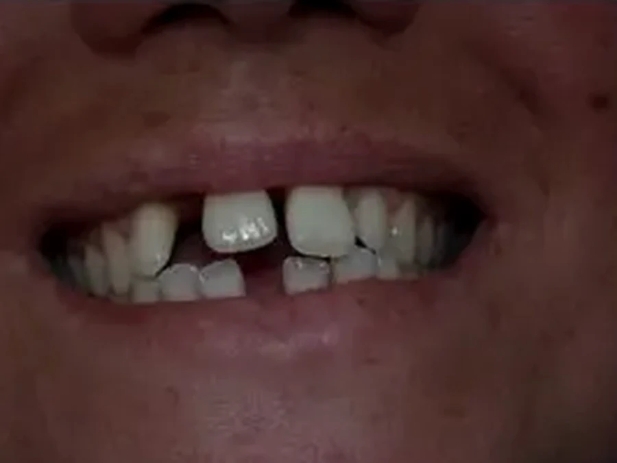
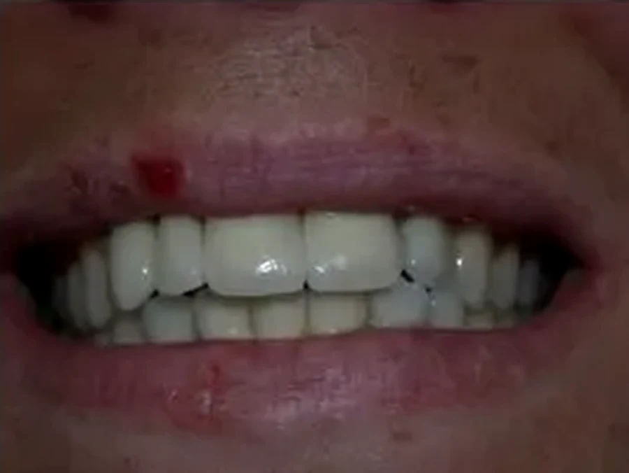

4.000 impianti dal 1999
Oltre 4.000 impianti osteointegrati con successiva protesi dal 1999, con una percentuale di successo dichiarata del 99,8%. Due pubblicazioni sul carico immediato (Implant Journal e Academy of Osseointegration, 2004).
Un impianto è una radice artificiale in titanio che prende il posto di quella persa: l'osso le cresce attorno nell'arco di due o tre mesi e sopra si avvita la corona. A differenza di un ponte lascia intatti i denti vicini. L'intero percorso resta in studio, dalla TAC tridimensionale alla chirurgia fino alla corona fresata nel laboratorio interno.
Dettaglio TAC Cone Beam o scanner intraorale in uso
Inquadratura stretta sul dettaglio, macchinario tagliato dai bordi.
Una vite in titanio quasi puro (99%) inserita nell'osso, che nel giro di due-tre mesi si integra con esso: è il processo chiamato osteointegrazione. Sopra si avvita la corona. Il risultato è un dente che si spazzola come gli altri e che, a differenza di un ponte, non obbliga a limare i denti sani accanto.
Il titanio è totalmente biocompatibile: il rigetto immunitario, nel senso in cui lo si intende per i trapianti, non esiste. Può però accadere che l'impianto non si osteointegri, o che perda il suo sostegno per una peri-implantite. In quel caso l'impianto si rimuove senza traumi e, se l'osso lo consente, si sostituisce con uno di dimensioni maggiori, spesso nella stessa seduta.
Le percentuali di sopravvivenza degli impianti sono del 95% nel mascellare superiore e del 99% nella mandibola: sono i dati della letteratura internazionale. Chiunque prometta il 100% sta semplificando.
Quattro fasi. Fra la seconda e la terza passa il tempo dell'osteointegrazione: è l'unica attesa che non si può accorciare.
La TAC Cone Beam interna misura altezza, spessore e densità dell'osso e la posizione del nervo. Su quei dati si progetta la posizione dell'impianto prima di entrare in sala.
In anestesia locale, con sedazione cosciente se la vuoi. L'impianto viene inserito nell'osso. Se l'osso è di buona qualità e la stabilità primaria è sufficiente, si può procedere al carico immediato: provvisorio fisso in giornata.
8–12 settimane in cui l'osso cresce a contatto con la superficie dell'impianto. In questa fase porti un provvisorio: non resti mai senza denti.
Impronta con scanner intraorale, progettazione CAD e realizzazione in zirconia nel laboratorio interno. Nessuna spedizione, nessuna attesa, ritocchi immediati.
Pazienti dello studio, che hanno firmato per pubblicare le loro fotografie. Stessa luce, stessa distanza e stesso obiettivo nelle due sessioni: fra il prima e il dopo cambiano solo i denti.


Prima DopoSei sedute in quattro mesi, e i denti sotto le corone sono i suoi.
Secondo caso clinico dello stesso trattamento
Protocollo standardizzato: stessa focale, flash anulare, retrattori e bilanciamento del bianco fissato.
Casi reali trattati presso l'Ambulatorio Dentistico Dr. Piccardo U. S.r.l. I risultati variano da paziente a paziente in funzione del quadro clinico di partenza e non sono garantiti. Immagini pubblicate a scopo di informazione sanitaria ai sensi dell'art. 9 della L. 24/2017, previo consenso informato scritto degli interessati.
Oltre 4.000 impianti osteointegrati con successiva protesi dal 1999, con una percentuale di successo dichiarata del 99,8%. Due pubblicazioni sul carico immediato (Implant Journal e Academy of Osseointegration, 2004).
TAC Cone Beam 3D, scanner intraorale, chirurgia e laboratorio odontotecnico interno iscritto al Ministero della Salute. Tutto resta in sede, e le modifiche si fanno mentre sei sulla poltrona.
Due perfezionamenti universitari, un corso all'Université Claude Bernard di Lione e tre master di II livello, l'ultimo in Implantologia Digitale (Padova, 2022).

Direttore Sanitario · Chirurgo orale, implantologo, protesista, sedazionista
Fondatore dello studio. Cinque master universitari di II livello, oltre 4.000 impianti osteointegrati e la sedazione cosciente praticata con una formazione universitaria dedicata.
Dopo la prima visita ricevi un preventivo scritto con le lavorazioni una per una, i tempi previsti e il totale, alle cifre del tariffario pubblico.
IVA esente ai sensi dell'art. 10 DPR 633/72. Detraibile al 19% nella dichiarazione dei redditi.
L'intervento si esegue in anestesia locale e non si sente. Il post-operatorio è generalmente più leggero di un'estrazione: gonfiore per 2–3 giorni, gestito con antidolorifici comuni. Se l'idea dell'intervento ti blocca, la sedazione cosciente risolve il problema a monte.
Non c'è una scadenza. Dipende dall'igiene domiciliare, dai controlli periodici e dal fumo. Gli impianti inseriti in questo studio nei primi anni Duemila sono in gran parte ancora in funzione. A farli perdere è quasi sempre la peri-implantite, un'infiammazione dell'osso attorno alla vite, che si previene con l'igiene professionale.
In molti casi sì. Il carico immediato prevede che nella stessa seduta si inseriscano gli impianti e si avviti una protesi provvisoria fissa. È possibile sia sul singolo dente sia sull'intera arcata, ma solo se le condizioni ossee lo permettono: la decisione si prende sulla TAC, non a priori.
Si aggiunge. Gli innesti di osso ricostruiscono il volume dove manca. Preferiamo prelievi da zone intraorali, così da evitare il prelievo extraorale che richiederebbe un ortopedico. Sono interventi che eseguiamo quando non c'è altra scelta riabilitativa: non come routine.
Nella maggior parte dei casi sì, con le dovute precauzioni. Lo studio è dotato di misuratore digitale della glicemia e dell'INR, oltre a defibrillatore e carrello delle emergenze completo. Porta l'elenco dei farmaci in prima visita.
Il ponte poggia su due denti sani, che vanno limati per farne dei pilastri: si sacrifica tessuto sano e si espone quei denti a un rischio che prima non correvano. L'impianto invece resta indipendente da tutto ciò che ha intorno. A parità di costo su un singolo elemento, l'impianto è quasi sempre la scelta più conservativa.
Corone in zirconia progettate e fresate nel laboratorio interno. Prove immediate, riparazioni in giornata.
Denti del giudizio inclusi, estrazioni difficili, parodontologia e innesti. Con TAC 3D e chirurgo dedicato.
Sedazione cosciente inalatoria ed endovenosa, ipnosi clinica. Prima si decide con cosa spegnere l'ansia, poi si comincia.
Comprende l'esame completo della bocca, le radiografie se servono, la diagnosi e il piano di cura scritto con tutti i costi.
Lunedì – Sabato · 8:00 – 20:30 · Via Maragliano 5, Genova · 3 posti auto gratuiti